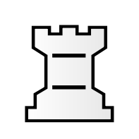
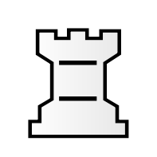

Welcome to my leaving cert computer science project for 2023.
This project models chess in python.
I am using the external library PyGame to provide a graphical interface.
I am basing this game of the Sanskrit version of chess (from 500-700 AD) which did not have check or checkmate. the king could be taken like a normal piece, this would end the game.
There were a few core components I wanted to complete:
- A turn based system
- Enforcing correct movement of pieces
- Pawn promotion
- Automatic movement of pieces
- Game save states
Since chess is a complex game with many different pieces, I needed my project architechture to be flexible enough to process this.
I decided to go for an object oriented approach to my design. Creating two major classes which everything works off.
The "Board" and "ChessPiece" classes hold effectively all of the programs code.
The "ChessPiece" class assigns an object a colour value, piece value, position value and a couple status values for taking pieces.
Meanwhile, the "Board" class houses multiple "ChessPiece" objects. It handles setting up the board, deciding whose turn it is, logging move data for analysis, saving the game and loading the game. It can also move a piece for a player automatically.
By splitting the code into these two sections, we can many pieces on the board with relative ease.
The game can process both keyboard input, mouse input and touch input.
It has been designed to accept a mouse click anywhere within the window. The program is intelligent enough to be able to reject an input if it is invalid (ie. the user has not clicked on the ChessPiece, rather they clicked on empty space)
The same is true for keyboard input. The keyboard is not required to play the game, but it adds additional functionality that the user can take advantage of.
For example, saving the game, loading up a previous session, reseting the board and enabling single player mode.
After completing the code for mouse input, I loaded the game onto another computer that had a touch screen. After a few adjustments to my code, the game is full compatible with touch devices. Granted some functionality would be lost on touch only devices as some functions are bound to the keyboard. But for those who struggle with coordinating movements with a mouse and prefer touch screen laptops, the game is designed to be inclusive to those users.
The game can compile the current state of the board into a save file. This file details the current position of all the pieces on the board, which pieces have been taken, whose turn it is and a log history of every move made so far. The logs include who moved what piece, where they moved it and how long it took them to do so.
We can analyise these save files to extract data such as the most (max) and least (min) commonly visited squares, the average time taken,
 

 
